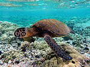

Parque Nacional la tigra
El Parque Nacional La Tigra fue el primer parque nacional en Honduras. Su principal objetivo es la conservación, preservación ecológica y el mantenimiento del potencial hidrologico y territorial y es de reserva natural.

fue creado en el 1 de enero de 1980
es un bosque nublado con una superficie de 328 kilometros cuadrados
Biodiversidad:
El parque alberga una gran diversidad se especies como :tucanes, monos, tapires, pumas, quetzal y ademas alberga una gran cantidad de insectos y escarabajos. Los helechos son otra atraccion principal del parque que miden 20 metros de altura.
La tigra tiene una gran variedad de flota y fauna, entre la vegetacion se puede mencionar especies de arboles como el Pino de ocote, Robles, Encinos, Liquidambar, aguactillos entre otros. Tambien eciste dicersidad de helechos, seis de ellos en peligro de extincion y lo cuales son prptegidos por la fundacion amigos de la tigra, Amitigra
Atras